Semester III
This semester was all about bridging the gap between theory and actual classroom teaching. It covered everything from our pre-internship preparation to real field visits and finally facing my practical teaching assessment.
Pre-Internship Orientation
Before we stepped into real schools, we had a detailed orientation in college. Honestly, this was exactly what I needed to calm my nerves. We discussed everything from understanding the daily school culture to how to handle classroom discipline.
It wasn't just about reading textbooks anymore; it was about learning how to work with other teachers, counselors, and the administration as a team. We spent a lot of time mapping out what is actually expected of us as student teachers once we enter the school gates.
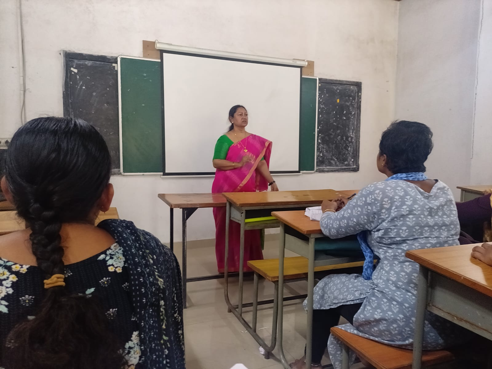
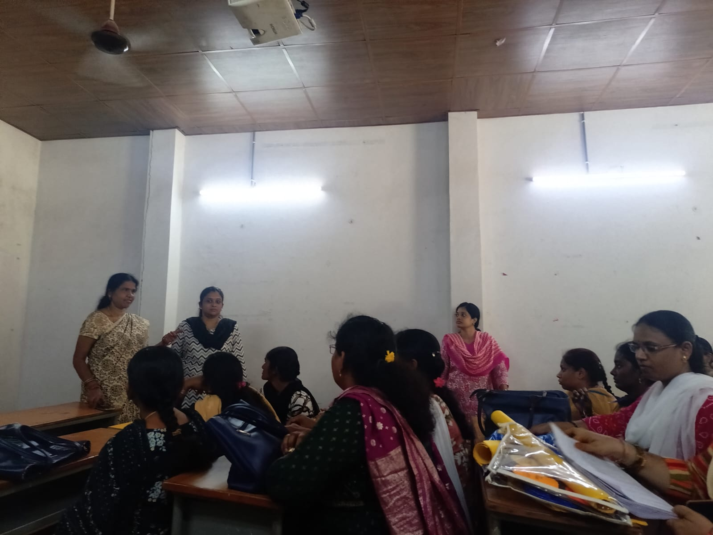
Biological Science Pedagogy
Teaching Science is completely different when you are standing in front of high schoolers. For my Biology lessons, I realized that just talking isn't enough. I put a lot of effort into drawing clear anatomy diagrams on the blackboard and using projectors so the students could actually see what we were discussing.
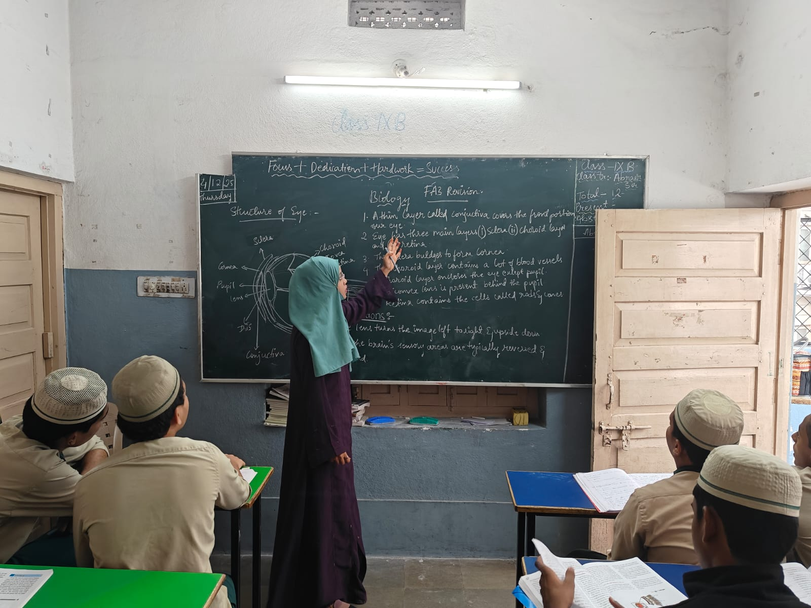
Anatomy Diagrams
Practicing my blackboard work to explain complex structures, like the layers of the human eye.
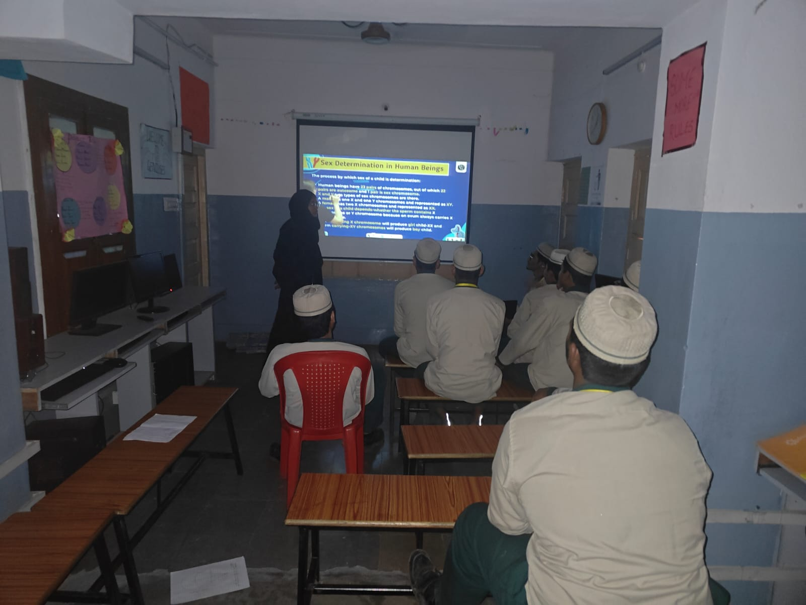
ICT Integration
Using digital slides to teach topics like gender determination, which keeps the students much more focused.
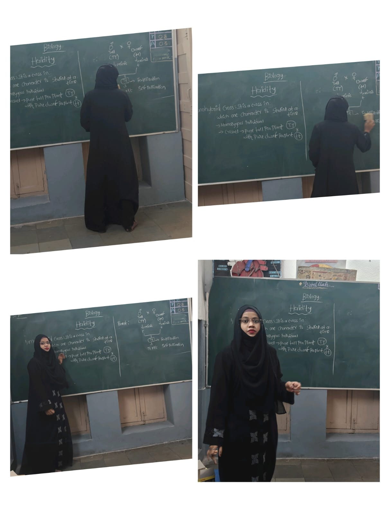
Concept Development
Breaking down cross-pollination and heredity step-by-step so the class could figure it out together.
Hindi Teaching Practice
When it came to teaching Hindi, my main challenge was making classic literature and poetry interesting for the class. I spent a lot of time preparing colorful, handmade charts featuring great poets like Tulsidas and Kabir Das.
I wrote down their famous 'Dohas' so the students could read along with me. Having that visual chart right next to the blackboard made a huge difference—it kept their attention and made the older language much easier for them to grasp.
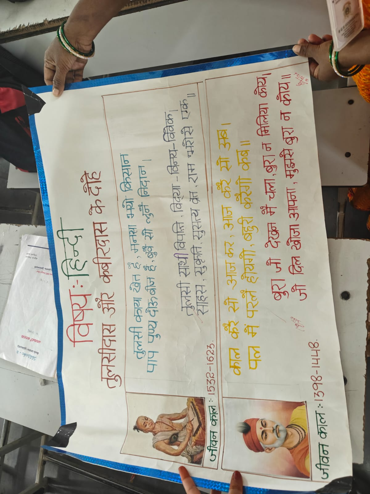
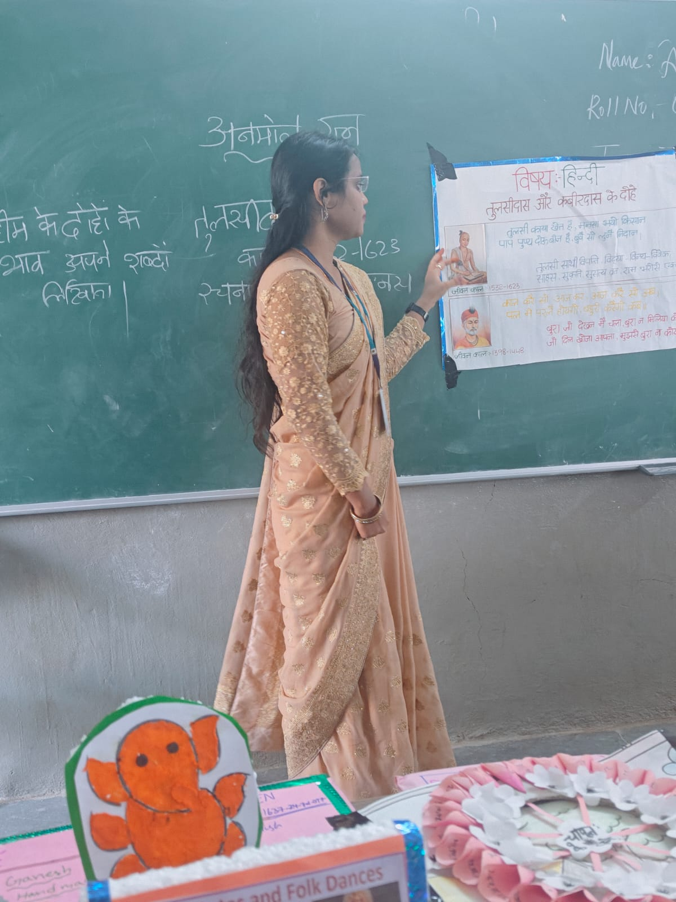
Educational Tour
Botanical Garden Study Visit
Getting the kids out of the classroom was definitely a highlight! We organized a study trip to the Botanical Garden, and it was such a refreshing experience for everyone. It's one thing to teach about plant types from a book, but letting them actually walk around and identify the plants made the lesson stick.
As a teacher, it also taught me a lot about how to manage a large group of energetic students outside the school building while keeping them focused on learning.
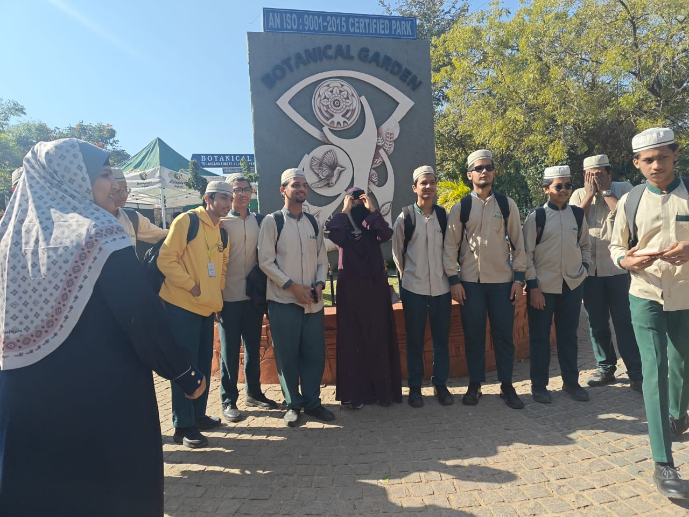
Visit to MV Foundation
Our visit to the MV Foundation was a real eye-opener for me. We got to see the ground reality of how NGOs work to stop child labor and bring children back into the education system through bridge courses.
We listened to presentations and interacted with the social workers there. It made me realize that being a teacher isn't just about finishing the syllabus; it's also about understanding the social backgrounds of our students and knowing how to support children who might be struggling at home.
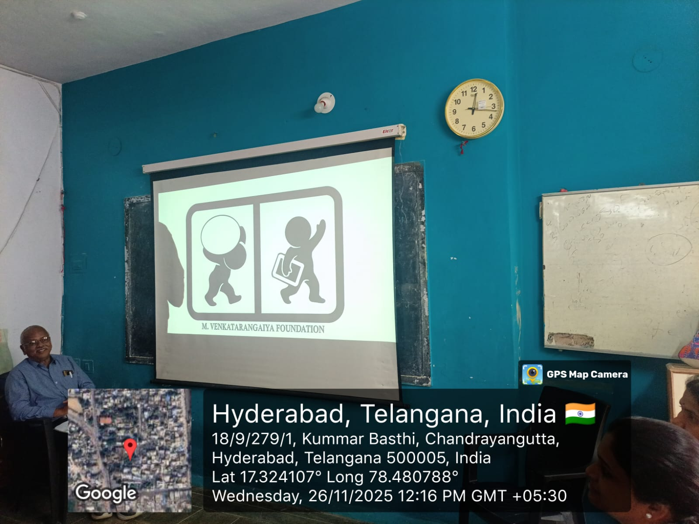
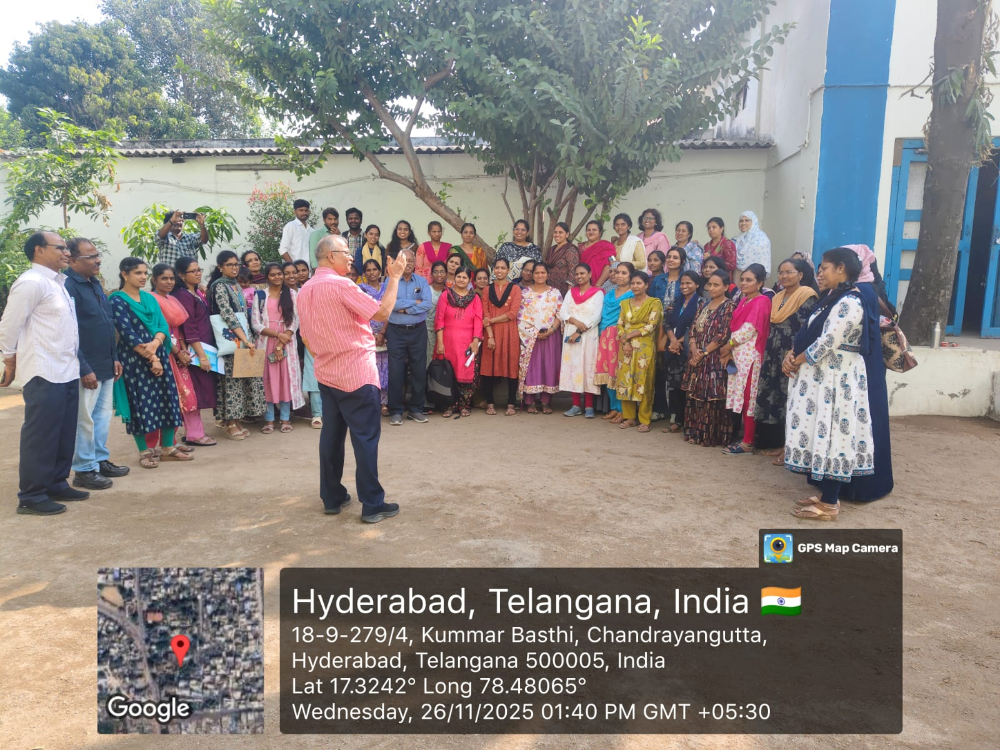
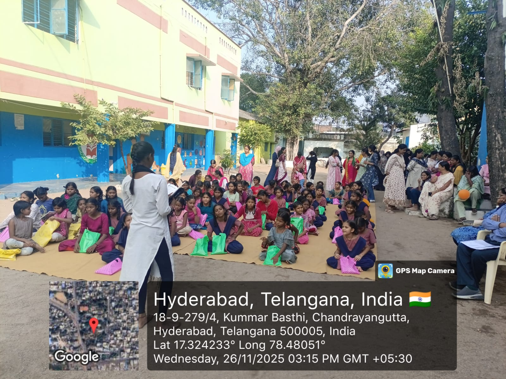
Digital Planning & Seminars
A big chunk of our time went into writing proper lesson plans. We had to shift from traditional paper planning to creating digital lesson plans using laptops and smartboards. It took some getting used to, but it makes teaching so much more interactive.
I also had to give seminar presentations to my peers and professors on how to use these digital tools. Standing up there and answering questions during the seminar really built up my confidence for public speaking, which I knew I would need for my final teaching exams.
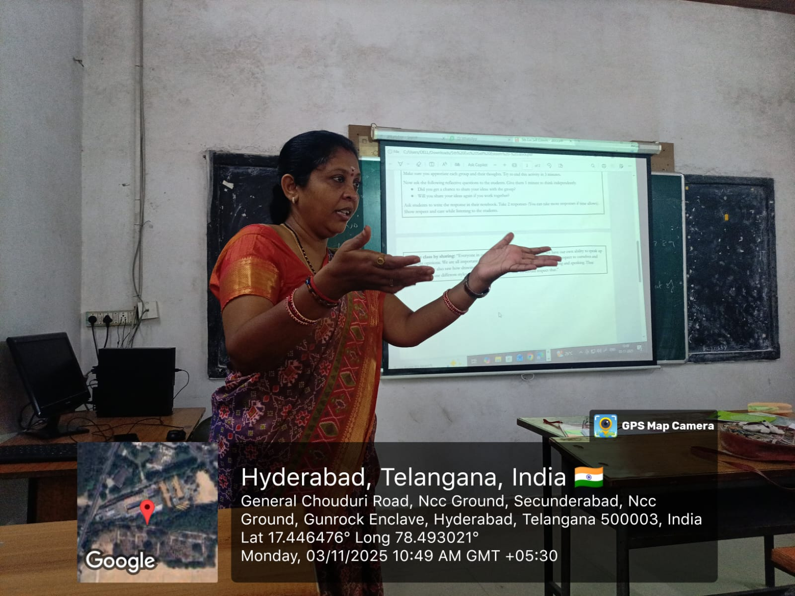
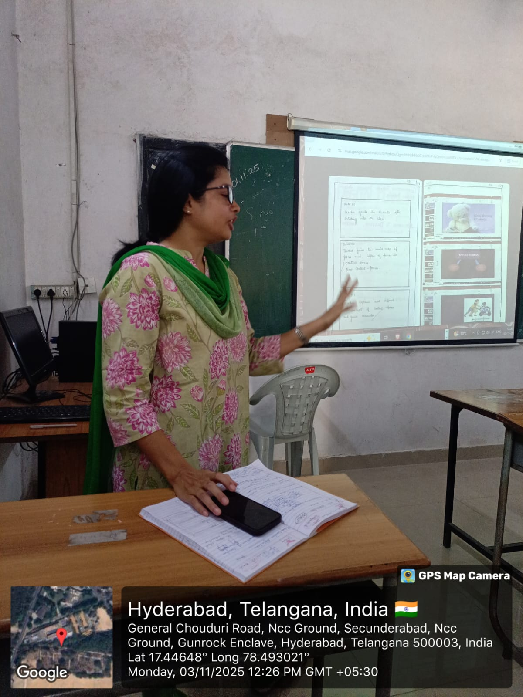
Practical Examination & Assessment
Everything we learned led up to the final practical teaching exams. This was the moment where I had to prove I could actually run a classroom on my own. I taught my final lesson on Biology, making sure my blackboard work was neat and that I used my charts effectively.
Honestly, it was a bit nerve-wracking knowing the examiners were sitting in the back watching my every move. But seeing the students raise their hands and answer my questions made it all worth it. It felt like all the hard work of Semester 3 finally paid off.
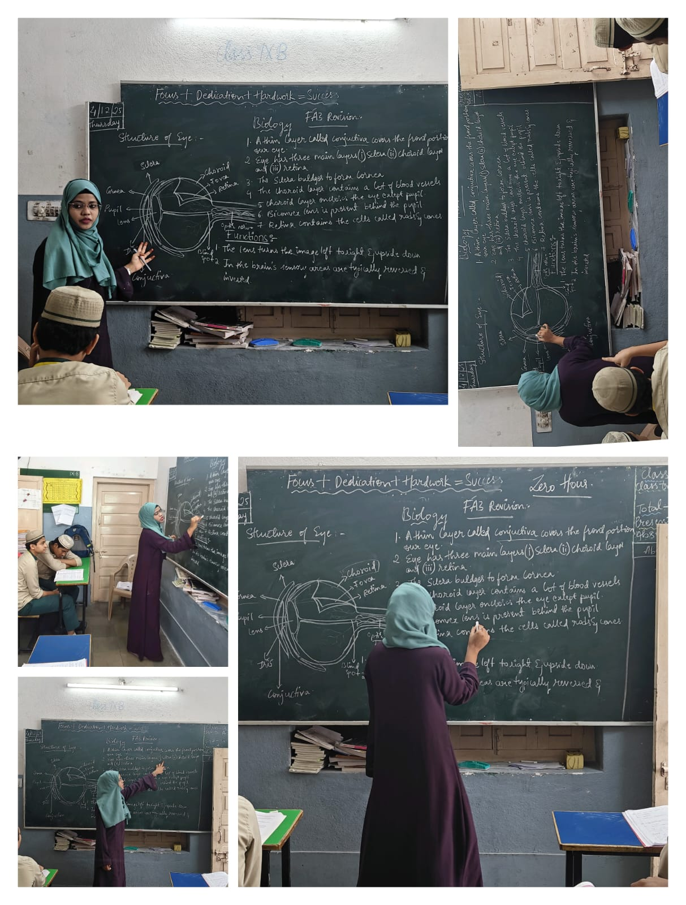